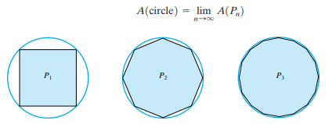
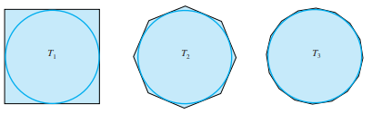
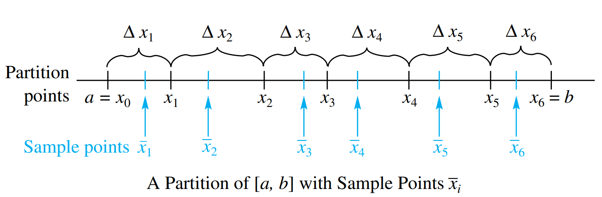
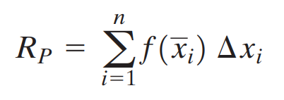

When we consider a region under a curved boundary, the problem of assigning
area is more difficult. However, over 2000 years ago, Archimedes provided the key
to a solution. Consider a sequence of inscribed polygons that approximate the
curved region with greater and greater accuracy.
For example, for the circle of
radius 1, consider regular inscribed polygons P1, P2, P3
below with 4 sides, 8 sides, 16 sides. The area of the circle is equal to the area of
Pn as the limit of n approaches infinity.

Same things happened when the polygons are being approached from outside the circle.

Riemann Sum
Consider a function f defined on a closed interval [a, b]. It
may have both positive and negative values on the interval, and it does not even
need to be continuous. Consider a partition P of the interval [a, b] into n subintervals (not necessarily
of equal length) by means of points like the one in the figure below. On each subinterval pick an arbitrary point
\(\bar{x}_i\) (which may be an end point); we call it a sample point for the ith subinterval.

We Call the sum :

Riemann Sum Visualization
Select the functions:
Select the methods:
a/left margin:
b/right margin:
Number of partitions: 16
Riemann sum = -,
integral = -,
err = -(Exact Integral removed for custom function)
Definite Integral
Now that you've learned how riemann sum can approximate the value of an integral,
here's the exact definition of a definite integral using riemann sum: